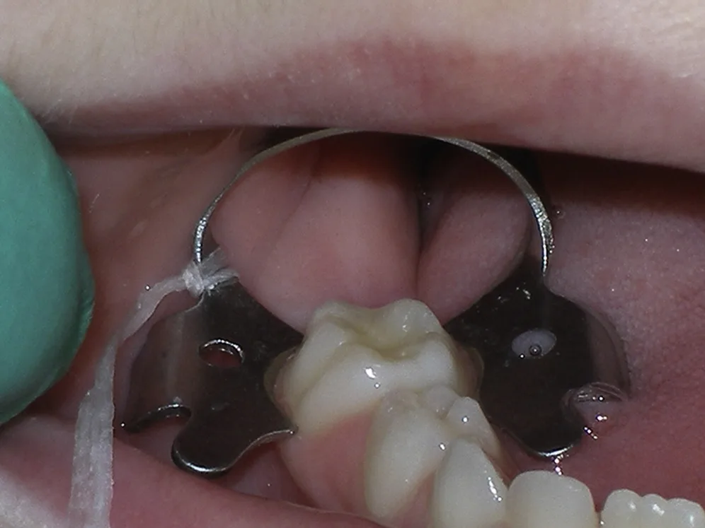

نسخه استخراجشده؛ ترجمه یا تأیید علمی انجام نشده است. وضعیت: captured
رابردم در کودک چهار کار همزمان میکند:
کنترل رطوبت — شرط موفقیت هر ترمیم چسبندهای.
محافظت از راه هوایی — جلوی بلعیده یا استنشاق شدن ابزار و مواد را میگیرد. در کودک این فایده وزن ویژهای دارد، چون کودکِ درازکشیده روی یونیت ممکن است ابزار یا ماده را ببلعد یا استنشاق کند.
کنار نگه داشتن زبان و گونه — هم ایمنی بیشتر، هم دید بهتر.
کمک رفتاری — کودک ابزار را نمیبیند و آب و مواد به دهانش نمیریزد؛ همین اضطراب را کم میکند.
در بیشتر ترمیمهای کودکان، ایزوله کردن همان یک دندان کافی است و کار را سریعتر میکند.
بیحسی لثه لازم است. کلمپ روی لثه فشار میآورد و بدون بیحسی، کودک همانجا همکاری را از دست میدهد — حتی اگر تراش بدون درد باشد.
نخ دندان به کلمپ ببند. اگر کلمپ رها شود، این نخ راه بازیابی سریع آن است. یک اقدام چندثانیهای در برابر یک اتفاق خطرناک.
اگر رابردم ممکن نیست چه؟ رول پنبه و ساکشن خوب میتوانند تا حدی جبران کنند — ولی وقتی کنترل رطوبت مطمئن نیست، انتخاب ماده هم باید عوض شود و سراغ موادی بروی که به رطوبت حساسیت کمتری دارند.

نوع سؤال: ساخت کلمه · 4 خانه
حروف منبع: ا · ز · ن · ب